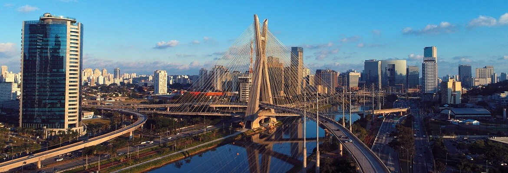

Em uma velha loja de antiguidades, Maria encontrou um livro sobre um tesouro perdido. Nesse livro, o autor deixa diversas pistas para encontrar a cidade e eu decidi segui-las!

Você começa sua aventura em Curitiba, em direção ao Jardim Botânico ao amanhecer para encontrar a primeira pista.

Na carta, uma das pistas indica que para encontrar a entrada para a cidade perdida você deve procurar a próxima pista em um dos pontos turísticos da cidade de São Paulo. Por qual você começa?